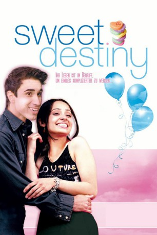

#5195 Sweet Destiny
 
 IMDB-Wertung: 7.2 / 10
IMDB-Wertung: 7.2 / 10  Metascore: 0
Metascore: 0 
Gugan ist eigentlich eine ganz gewöhnliche Teenagerin, die gerne shoppen geht, ab und zu mal kifft, sich mit Freunden trifft und einfach nur in den Tag hinein lebt. Das wäre alles kein Problem, wenn Gugan nicht aus einer tief religiösen, indischen Familie kommen würde, die mit ihrem westlichen Lebensstil überhaupt nicht einverstanden ist. Als sie dann noch den smarten Sunnyboy Raymond kennenlernt und sich in ihn verliebt, beginnen für sie die Probleme. Denn während sich ihr Beziehung zu Raymond langsam entwickelt, schwillt ihr Bauch gleichzeitig an. Sie ist von ihrem Ex-Freund Arjan mit Drillingen schwanger. Davon darf aber ihre traditionsbewusste Mutter nichts erfahren. Gugan wurde schon einem anderen Mann versprochen. Doch kein Geheimnis ist für die Ewigkeit gemacht. Weshalb sie ihr Elternhaus verlassen muss.
Jahr: 2004
Dauer: 91 Minuten
FSK: 12
Land: Kanada Studio: Los Banditos FilmsTonspuren:
Untertitel:
Auflösung: SD (640x272) Größe: 699 MB
Genre: Drama, Komödie, Liebe
Regisseur: Gaurav Seth
Drehbuch: Peggy Chiao
Soundtrack:
Darsteller:
- Jasbir Mann als Arjan
- Chenier Hundal als Raymond
 Agam Darshi als Pria Dhaliwal
Agam Darshi als Pria Dhaliwal Linda Darlow als Mrs. O'Donnell
Linda Darlow als Mrs. O'Donnell- Natasha Wilson als Kelly O'Donnell
- Balinder Johal als Old Lady Cheema
- Nimet Kanji als Arjan's Mother
- Sherri McLean als Receptionist
- Shaheen Khan als Mrs. Dhaliwal
- Juggan Kazim als Gugan Dhaliwal
- Jolly Bader als Mr. Dhaliwal
- Dylan Mukesh Puri als Ruman Dhaliwal
- Syndy De Silva als Anita
- Madhu Bagga als Jessie
- Sonny Litt als Nav
- Rohan Mathew als Roop
- Kala August Sidhu als Piper
 Don MacKay als Dr. Berenstein
Don MacKay als Dr. Berenstein- Bernard J. Manuel als Arjan's Father
- Lacchman Dhaliwal als Praying Baba
Datei: X:\2004(N-Z)\Sweet Destiny (2004, FSK12, 640x272).avi seit 29.12.2016
Festplatte: HD 2003-2004-2005(A-F)
 Es gibt insgesamt 54 Filme in der Gruppe '2004(N-Z)'
Es gibt insgesamt 54 Filme in der Gruppe '2004(N-Z)'